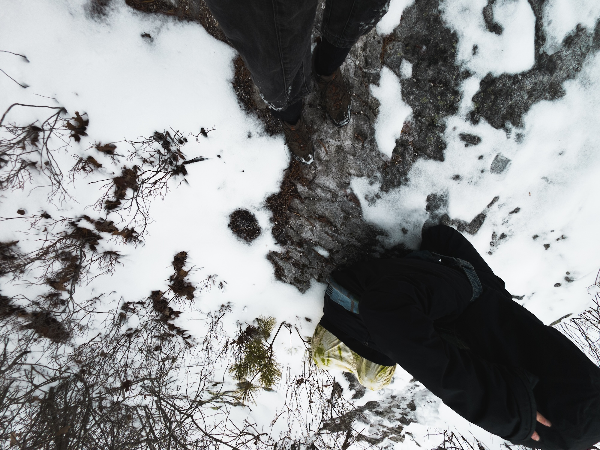

sign up here
algotrek 05 is on 20205-03-29 at Lantern Hill, located in North Stonington, New London County, Connecticut
FAQ
- this 491 feet (149 m), 2.6 miles long hike will be 3 hours long
- a small pa and mini projector will be available for use
- things you should bring : food, water, good shoes, comfortable clothing, happiness
- a first aid kit will be available onsite
please fill out this form if you would like to perform / attend ...
